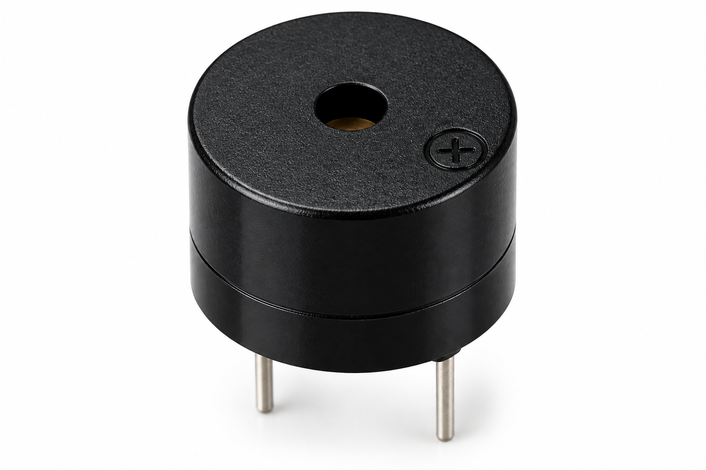

Wi_Fi_Vibration_Event_Counter.ino

Wi-Fi Vibration Event Counter

To develop a Wi-Fi Vibration Event Counter using an ESP32 development board, bare SW-500D vibration sensor, SSD1306 OLED display and active buzzer.
The experiment detects mechanical vibration events, counts valid sensor activations, provides audible feedback, displays the event count on an OLED and makes the count available through a Wi-Fi dashboard.
The Wi-Fi Vibration Event Counter demonstrates mechanical vibration sensing, digital input monitoring, event counting, software debouncing, OLED interfacing and wireless data visualization.
The experiment uses a bare SW-500D vibration sensor. Unlike a three-pin vibration module, the bare SW-500D is a two-terminal mechanical contact device.
One sensor terminal is connected to GPIO27, while the other is connected to GND. The ESP32 enables its internal pull-up resistor so that a sensor contact closure produces a LOW input.
Each accepted HIGH-to-LOW transition increases the event counter by one. A 500 ms software lockout helps prevent rapid contact changes from being counted as multiple events.
After a valid event, the active buzzer connected to GPIO25 sounds for approximately 120 ms. The updated count is displayed on the SSD1306 OLED.
The ESP32 also hosts a local Wi-Fi dashboard that displays the total number of vibration events, the time of the last event and device uptime. A Reset Counter button clears the count.
| Condition | Sensor Input | System Action |
|---|---|---|
| No contact closure | HIGH | Continue monitoring |
| New contact closure | LOW transition | Count event if lockout has expired |
| Event accepted | LOW transition | Increment counter and activate buzzer |
| Rapid repeated activity | Within 500 ms lockout | Do not increment counter |
| Dashboard reset | HTTP POST command | Reset event count to zero |
| Parameter | Configuration |
|---|---|
| Controller | ESP32 DevKitC |
| Vibration Sensor | SW-500D Bare Sensor |
| Vibration Input | GPIO27 |
| Input Mode | INPUT_PULLUP |
| Buzzer Output | GPIO25 |
| OLED | SSD1306 128×64, 0.96-inch |
| OLED SDA | GPIO21 |
| OLED SCL | GPIO22 |
| Event Lockout | 500 ms |
| Buzzer Duration | 120 ms |
| Wi-Fi Server | Port 80 |
| Dashboard Refresh | Approximately 1 second |
| Serial Monitor | 115200 baud |
The SW-500D is a mechanical vibration switch, not an accelerometer or calibrated vibration-intensity sensor.
The counter records accepted contact-closure events. It does not measure vibration amplitude, acceleration, frequency or physical displacement.
A 500 ms lockout reduces repeated detections but may also intentionally ignore separate vibrations that occur within the same interval.

Main microcontroller for vibration sensing, counting, OLED output and Wi-Fi.

Two-terminal mechanical vibration switch that detects contact movement.

Displays the total number of accepted vibration events.

Provides audible feedback after an accepted event.

Used for assembling the vibration sensor circuit.

Connect the vibration sensor, buzzer and OLED to the ESP32.
Install the ESP32 board support package and U8g2 library before compiling the sketch.
| Sensor Terminal | ESP32 Connection |
|---|---|
| Terminal 1 | GND |
| Terminal 2 | GPIO27 |
| OLED Pin | ESP32 Connection |
|---|---|
| VCC | 3V3 |
| GND | GND |
| SDA | GPIO21 |
| SCL | GPIO22 |
| Buzzer Terminal | ESP32 Connection |
|---|---|
| Positive / Signal | GPIO25, through driver if necessary |
| Negative / GND | GND |
| Function | GPIO / Setting |
|---|---|
| Vibration Sensor | GPIO27, INPUT_PULLUP |
| Active Buzzer | GPIO25, OUTPUT |
| OLED SDA | GPIO21 |
| OLED SCL | GPIO22 |
| OLED I²C Address | 0x3C, module-dependent |
| Accepted Event Interval | 500 ms minimum |
The bare SW-500D does not require VCC. Connect its two terminals only as specified for the switch.
The ESP32 uses INPUT_PULLUP to maintain a HIGH signal when the switch is open. A contact closure to GND produces LOW.
Use a buzzer compatible with the ESP32's GPIO voltage and current limits. Add a transistor driver if the buzzer requires higher current.
Verify that the OLED supports 3.3V operation and uses the configured I²C address.

The SW-500D mechanically changes its contact state when vibration disturbs the internal switch. The ESP32 monitors this state through GPIO27.
INPUT_PULLUP maintains a HIGH input while the switch is open. When the contacts close, the input becomes LOW.
The program detects a new HIGH-to-LOW transition. If the last accepted event occurred at least 500 ms earlier, the counter increases.
Each accepted event activates the buzzer for approximately 120 milliseconds.
The SSD1306 OLED displays the vibration event count. It updates whenever the counter changes or is reset.
The ESP32 provides a local web page displaying event count, last event time and uptime. The browser requests new data approximately every second.
The Reset Counter button sends a command to the ESP32. The system resets the counter and refreshes the OLED and dashboard data.
ESP32 Experiment · Code Review
Click an explanation tab to highlight its complete matching source-code section. Copy Code copies the entire Arduino sketch.
Each tab highlights its exact corresponding code section on the left.
The SW-500D is a bare two-terminal mechanical vibration switch. It produces a contact state rather than an analog acceleration reading.
INPUT_PULLUP uses the ESP32 internal pull-up resistor so that the digital input normally reads HIGH and becomes LOW when the switch closes.
Mechanical contacts can switch several times during one physical vibration. The 500 ms event lockout reduces repeated counting.
The SSD1306 OLED uses I²C communication through GPIO21 and GPIO22. It displays the total event count.
The ESP32 runs an HTTP web server. The browser fetches event information as JSON and updates the displayed counter.
The browser sends an HTTP POST request to the reset route. The ESP32 clears the counter and refreshes the OLED.
Answers: GPIO27; no; GPIO25; GPIO21 and GPIO22; 500 ms; Reset Counter.
Try It: Trigger the bare vibration sensor several times, observe the counter, then press Reset Counter on the web dashboard.
Starting Wi-Fi Vibration Event Counter... OLED initialized. Connecting to Wi-Fi... Wi-Fi connected. Dashboard: http://192.168.x.x Web server started. Vibration monitoring started.
Vibration Event: 1 Vibration Event: 2 Vibration Event: 3 Vibration counter reset.
VIBRATION EVENTS 0
VIBRATION EVENTS 3
Wi-Fi Vibration Event Counter Total Vibration Events 3 Last Event: 12450 ms Uptime: 18000 ms [Reset Counter]
| Condition | Expected Response |
|---|---|
| System starts | Counter displays 0 |
| Valid vibration event | Counter increments and buzzer activates |
| Repeated event within lockout | Counter does not increment |
| Event accepted | OLED and dashboard display updated count |
| Reset Counter pressed | Count returns to 0 |

The Wi-Fi Vibration Event Counter experiment demonstrates vibration contact detection, event counting and debouncing using an ESP32 and bare SW-500D sensor.
Each accepted contact-closure event increments a counter, activates an audible buzzer, and updates the SSD1306 OLED.
The ESP32 also provides a local Wi-Fi dashboard for viewing event information and resetting the counter.